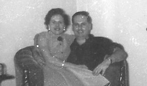
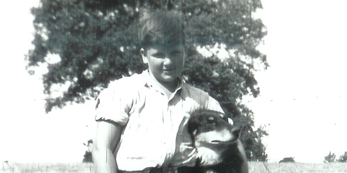

-
George William Thomas Henry Newbury ( b.1922 - d.1992 )

1922 JUN 26 : George was born in Toronto, Ontario. Canada
1944 JAN 28 : George married Irene Phyllis Gander in England
1992 FEB 17 : George passed away, he was 69 years old (cancer)
George is buried at the cemetery in Glenburnie
-
Raymond Albert Newbury ( b.1923 - d.1988 )

1923 DEC 25 : Raymond was born at home in Toronto, Ontario, Canada
1988 NOV 25 : Raymond passed away, he was 64 years old (heart attack)
Raymond is buried at the Cataraqui Cemetery
-
William Charles Newbury ( b.1925 - d.1993 )

1925 FEB 10 : William was born at home in Toronto, Ontario. Canada
1993 : William passed away at 30 Nelson St, he was 68 years old (cancer)
Bill is buried at the Cataraqui Cemetery
-
Thomas Henry Newbury ( b.1927 - d.1941 )
1926 NOV 5 : Thomas was born at home in Toronto, Ontario. Canada
1941 NOV 18 : Thomas passed away near Barriefield, he was 15 years old (diabetes)
Tommy is buried at the Cataraqui Cemetery